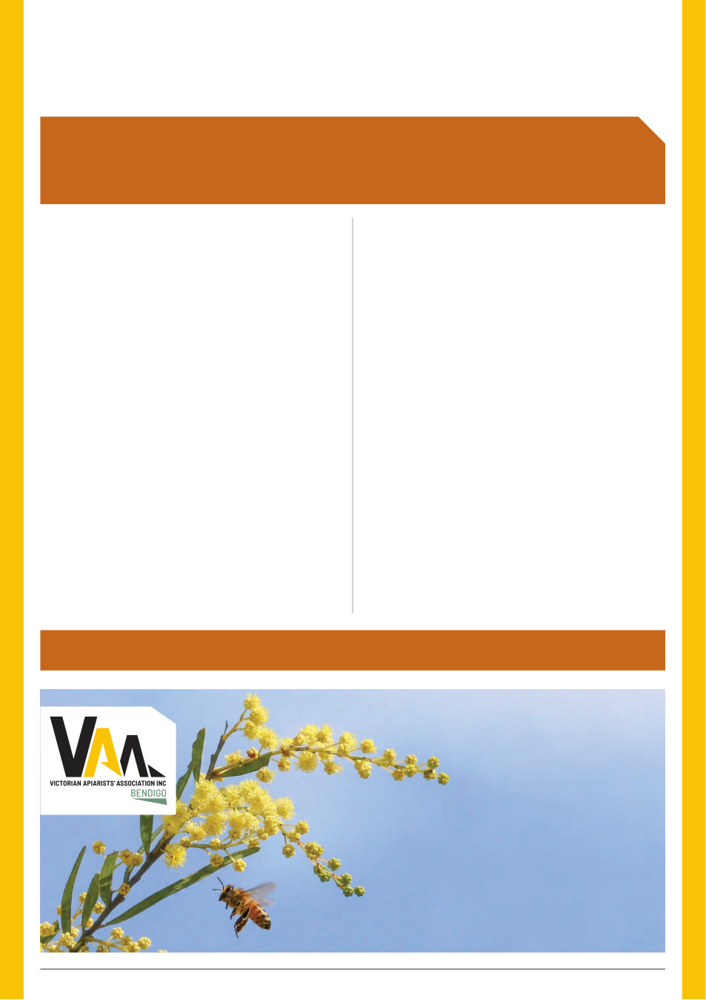

10 | Published since 1918 by the VAA – founded in 1892
Since late 2025, the Working Group has been providing
industry advice on the rapidly evolving challenges surrounding
varroa treatment, agricultural chemical use, record-keeping and
compliance.
Over the three-year program, the Working Group and
Agriculture Victoria will focus on several key priorities: exploring
available pathways to legal treatment options, improving education
around agricultural chemical use and compliance, establishing
baseline chemical-use and residue data, strengthening industry–
government engagement, and developing a more practical, risk-
based approach to agricultural chemical compliance.
The VAA Chemical Working Group recently held its second
meeting with Agriculture Victoria’s chemical regulation team.
Victorian beekeepers are now managing varroa as an ongoing
part of their business. Miticide resistance has been detected
in Australia, including Victoria. This means access to effective,
practical, and legally compliant treatment options is increasingly
important.
The Working Group is focused on ensuring the experience
and practical needs of Victorian beekeepers are represented as
Agriculture Victoria progresses the Industry Action Plan.
Importantly, the second meeting delivered two practical
outcomes for Victorian beekeepers through the Working Group’s
engagement with Agriculture Victoria.
VAA Chemical Working Group
September 2026
Formic Pro
Apiguard Gel for Beehives
Collect from
BBVAA Field Day
Oct 11th 2026
Order with Peta
Mated Queen Bees
The VAA Chemical Working Group continues to work directly with Agriculture
Victoria on the implementation of the department-led Industry Action Plan (IAP),
with a clear focus on practical outcomes for Victorian beekeepers.
We will continue to keep Victorian beekeepers informed as this work progresses.
Advocacy and Industry Action
Practical Outcomes for Beekeepers
The Working Group has confirmed with Agriculture Victoria
that Victorian beekeepers may use single pad applications of
Formic Pro as part of a complete treatment.
This provides greater flexibility for beekeepers incorporating
formic acid into an integrated varroa management program and
allows treatment decisions to better consider seasonal conditions,
colony strength, and mite pressure.
The Working Group has also confirmed with Agriculture
Victoria that Victorian beekeepers may use a half‐dose Apiguard
treatment option.
Again, this provides greater flexibility when incorporating
thymol into an integrated varroa management program under
different seasonal and colony conditions.
These are positive early outcomes from the Industry Action
Plan which demonstrates the value of having experienced Victorian
beekeepers directly engaged with regulators.
There is considerably more work to do.
As varroa management evolves in Australia, maintaining
access to a range of effective treatment options, while supporting
responsible chemical use, good record keeping and integrated pest
management, will remain critical.
The VAA Chemical Working Group will continue to advocate
for practical treatment pathways, clear regulatory guidance and
an approach that recognises both the regulatory responsibilities
of government and the realities of managing bees commercially
and recreationally.